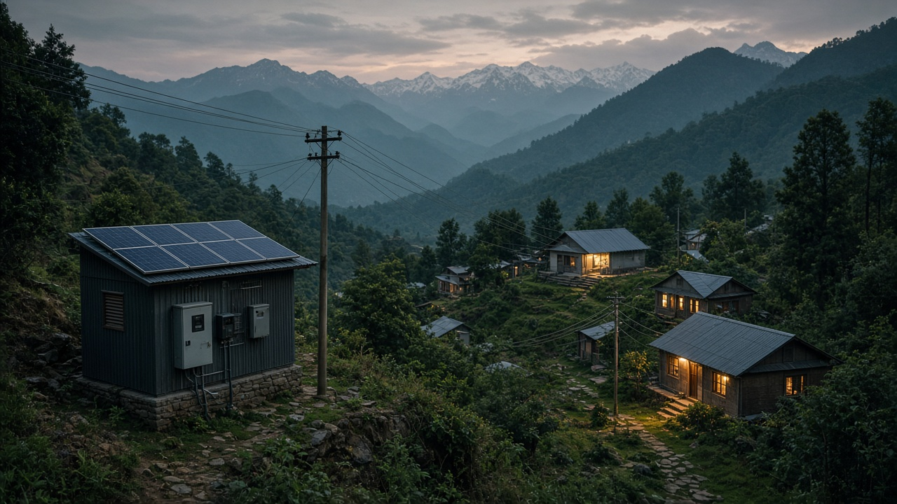
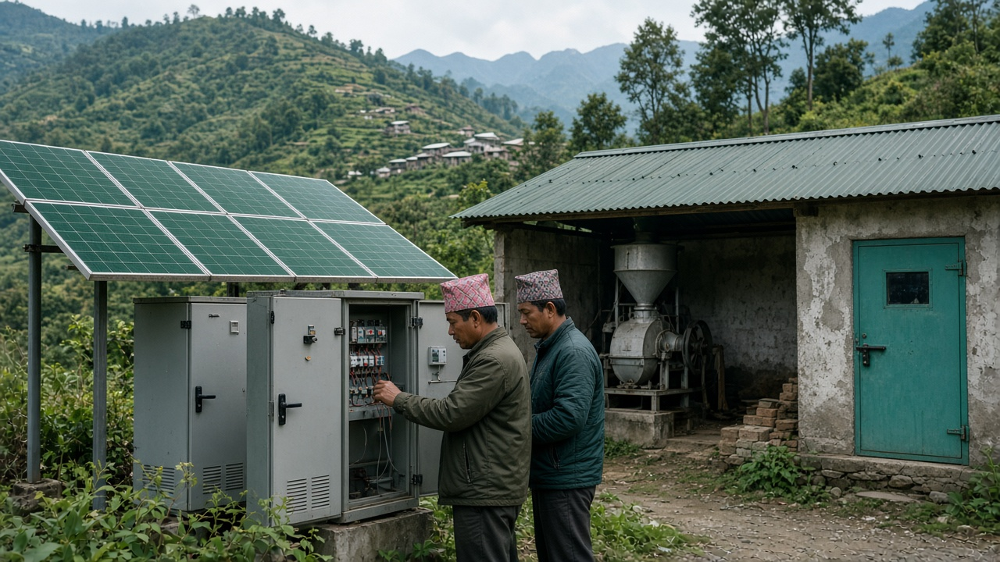

Microgrids and Decentralized Power
Published on August 22, 2026

Microgrids are localized electricity networks that can operate independently or in connection with the main grid, serving villages, campuses, hospitals, or industrial parks with generation sources nearby. They typically combine solar panels, small hydropower, diesel or biogas backup, and battery storage controlled by smart inverters that balance supply and demand in real time. Decentralized power reduces transmission losses over long mountain lines, brings electricity to remote communities faster than waiting for centralized grid extension, and improves resilience when national grids fail during storms, landslides, or maintenance shutdowns.
Successful microgrid projects depend on community ownership models, tariff structures that cover operation and maintenance, and trained local operators who can troubleshoot equipment. In Nepal's hills, micro-hydro microgrids have electrified settlements for decades, powering lights, mills, and phone charging while user committees manage schedules and fee collection. Solar-battery mini-grids are increasingly cost-competitive where water resources are insufficient for hydro. Technical support hotlines linked to regional service centers help remote operators resolve faults without waiting for urban specialists. Hybrid designs that integrate multiple sources improve reliability when monsoon clouds reduce solar output or dry seasons limit stream flow.
Policy frameworks must clarify how microgrids interconnect with national utilities, whether surplus power can be sold upstream, and how subsidies are allocated between grid expansion and decentralized alternatives. Digital monitoring platforms enable remote diagnostics and performance tracking across scattered sites. Standardized technical guidelines reduce failures when multiple donors and contractors implement projects in the same region. As appliance efficiency improves and productive use loads such as agro-processing and cold storage grow, microgrids can support local economic development beyond basic lighting. Decentralized renewable power is not a second-best option—it is often the most practical path to inclusive, sustainable energy access in geographically challenging regions.
माइक्रोग्रिडहरू स्वतन्त्र वा मुख्य ग्रिडसँग जोडिएर सञ्चालन हुन सक्ने स्थानीय विद्युत सञ्जाल हुन्, जसले गाउँ, क्याम्पस, अस्पताल वा औद्योगिक पार्कहरूलाई नजिकैका उत्पादन स्रोतबाट सेवा दिन्छ। तिनमा प्रायः सौर्य प्यानल, सानो जलविद्युत, डिजेल वा बायोग्यास ब्याकअप र स्मार्ट इन्भर्टरले नियन्त्रण गर्ने ब्याट्री भण्डारण संयोजन हुन्छ, जसले वास्तविक समयमा आपूर्ति र माग सन्तुलन गर्छ। विकेन्द्रीकृत विद्युतले लामो पहाडी लाइनमा प्रसारण हानि घटाउँछ, केन्द्रीकृत ग्रिड विस्तारको प्रतीक्षा भन्दा टाढाका समुदायहरूमा छिटो विद्युत पुर्याउँछ, र आँधी, पहिरो वा मर्मत बन्द हुँदा राष्ट्रिय ग्रिड असफल भए पनि लचिलोपन सुधार्छ।
सफल माइक्रोग्रिड परियोजनाहरू समुदाय स्वामित्व मोडेल, सञ्चालन र मर्मत ढाक्ने ट्यारिफ संरचना, र उपकरण समस्या समाधान गर्न सक्ने प्रशिक्षित स्थानीय सञ्चालकमा निर्भर गर्छ। नेपालका पहाडमा माइक्रो-हाइड्रो माइक्रोग्रिडले दशकौंदेखि बस्तीहरू विद्युतीकरण गरेका छन्, बत्ती, मिल र फोन चार्जिङ चलाउँदै प्रयोगकर्ता समितिहरूले तालिका र शुल्क संकलन व्यवस्थापन गर्छन्। पानी स्रोत जलविद्युतका लागि अपर्याप्त भएका ठाउँमा सौर्य-ब्याट्री मिनी-ग्रिडहरू बढ्दो लागत-प्रतिस्पर्धी हुँदै छन्। क्षेत्रीय सेवा केन्द्रसँग जोडिएका प्राविधिक सहयोग हटलाइनले टाढाका सञ्चालकहरूलाई शहरी विशेषज्ञको प्रतीक्षा बिना बिग्रिएको उपकरण मर्मत गर्न मद्दत गर्छ। धेरै स्रोत एकीकृत गर्ने हाइब्रिड डिजाइनले मनसुन बादलले सौर्य उत्पादन घटाउँदा वा सुक्खा मौसमले खोलाको प्रवाह सीमित गर्दा विश्वसनीयता बढाउँछ।
नीति ढाँचाले माइक्रोग्रिडहरू राष्ट्रिय उपयोगितासँग कसरी जोडिन्छ, अतिरिक्त विद्युत माथि बेच्न मिल्छ कि मिल्दैन, र ग्रिड विस्तार र विकेन्द्रीकृत विकल्पबीच अनुदान कसरी बाँडिन्छ भन्ने स्पष्ट गर्नुपर्छ। डिजिटल अनुगमन प्लेटफर्मले छरिएका स्थलहरूमा टाढाबाट निदान र प्रदर्शन ट्र्याकिङ सक्षम बनाउँछ। मानकीकृत प्राविधिक दिशानिर्देशले एउटै क्षेत्रमा धेरै दाता र ठेकेदारले परियोजना लागू गर्दा असफलता घटाउँछ। उपकरण कुशलता बढ्दै गए र कृषि-प्रशोधन र कोल्ड स्टोरेज जस्ता उत्पादनमुखी भार बढ्दै गए, माइक्रोग्रिडले आधारभूत बत्तीभन्दा बढी स्थानीय आर्थिक विकास समर्थन गर्न सक्छ। विकेन्द्रीकृत नवीकरणीय विद्युत दोस्रो विकल्प होइन—भौगोलिक रूपमा चुनौतीपूर्ण क्षेत्रहरूमा समावेशी, दिगो ऊर्जा पहुँचको प्रायः सबैभन्दा व्यावहारिक मार्ग हो।

माइक्रोग्रिड स्थानीय बिजली नेटवर्क हैं जो स्वतंत्र रूप से या मुख्य ग्रिड से जुड़कर काम कर सकते हैं, और गांवों, परिसरों, अस्पतालों या औद्योगिक पार्कों को पास के उत्पादन स्रोतों से सेवा देते हैं। इनमें आमतौर पर सौर पैनल, छोटी जलविद्युत, डीजल या बायोगैस बैकअप, और स्मार्ट इन्वर्टर द्वारा नियंत्रित बैटरी भंडारण का संयोजन होता है, जो वास्तविक समय में आपूर्ति और मांग संतुलित करते हैं। विकेंद्रीकृत बिजली लंबी पहाड़ी लाइनों पर प्रसारण हानि कम करती है, केंद्रीकृत ग्रिड विस्तार की प्रतीक्षा से तेज़ी से दूरस्थ समुदायों तक बिजली पहुंचाती है, और तूफान, भूस्खलन या रखरखाव बंद होने पर राष्ट्रीय ग्रिड विफल होने पर भी लचीलापन बढ़ाती है।
सफल माइक्रोग्रिड परियोजनाएं सामुदायिक स्वामित्व मॉडल, संचालन और रखरखाव को कवर करने वाली टैरिफ संरचना, और उपकरण की समस्या निवारण कर सकने वाले प्रशिक्षित स्थानीय संचालकों पर निर्भर करती हैं। नेपाल की पहाड़ियों में माइक्रो-हाइड्रो माइक्रोग्रिड ने दशकों से बस्तियों को बिजली दी है, रोशनी, मिल और फोन चार्जिंग चलाते हुए उपयोगकर्ता समितियां समय-सारणी और शुल्क संग्रह प्रबंधित करती हैं। जहां पानी संसाधन जलविद्युत के लिए अपर्याप्त हैं, वहां सौर-बैटरी मिनी-ग्रिड तेजी से लागत-प्रतिस्पर्धी हो रहे हैं। क्षेत्रीय सेवा केंद्रों से जुड़ी तकनीकी सहायता हॉटलाइन दूरस्थ संचालकों को शहरी विशेषज्ञों की प्रतीक्षा किए बिना खराबी सुलझाने में मदद करती है। कई स्रोतों को एकीकृत करने वाले हाइब्रिड डिजाइन मानसून बादलों से सौर उत्पादन कम होने या सूखे मौसम में नदी प्रवाह सीमित होने पर विश्वसनीयता बढ़ाते हैं।
नीति ढांचे को स्पष्ट करना होगा कि माइक्रोग्रिड राष्ट्रीय उपयोगिताओं से कैसे जुड़ते हैं, अतिरिक्त बिजली ऊपर बेची जा सकती है या नहीं, और ग्रिड विस्तार और विकेंद्रीकृत विकल्पों के बीच सब्सिडी कैसे आवंटित होती है। डिजिटल निगरानी प्लेटफ़ॉर्म बिखरे हुए स्थलों पर दूरस्थ निदान और प्रदर्शन ट्रैकिंग सक्षम करते हैं। मानकीकृत तकनीकी दिशानिर्देश एक ही क्षेत्र में कई दाताओं और ठेकेदारों द्वारा परियोजनाएं लागू करने पर विफलता कम करते हैं। उपकरण दक्षता बढ़ने और कृषि-प्रसंस्करण और कोल्ड स्टोरेज जैसे उत्पादक उपयोग भार बढ़ने पर, माइक्रोग्रिड बुनियादी रोशनी से परे स्थानीय आर्थिक विकास का समर्थन कर सकते हैं। विकेंद्रीकृत नवीकरणीय बिजली दूसरा विकल्प नहीं है—यह भौगोलिक रूप से चुनौतीपूर्ण क्षेत्रों में समावेशी, टिकाऊ ऊर्जा पहुंच का अक्सर सबसे व्यावहारिक मार्ग है।